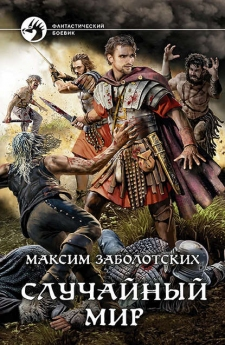

Максим Заболотских
(об авторе)
Немного о жизни
Максим родился в 1985 году и, будучи сыном военного, перемещался по необъятным российским просторам с завидной регулярностью, меняя место жительства каждые несколько лет. Свое детство вспоминает с удовольствием: не каждому дано в столь короткий срок собрать столько впечатлений и посетить столь разные места, от азиатских пустынь до крайнего севера, от маленьких военных городков до Москвы и Питера.
Свое первое образование Максим получил в Петербурге, на Восточном факультете СПбГУ, по специальности африканистика. Во время работы над кандидатской диссертацией посетил Эфиопию. Эта поездка сильно расширила его горизонт и дала ему понять, насколько непохожей может быть жизнь в разных уголках нашей планеты.
Позднее Максим освоил профессию программиста. Он работает по этой специальности и по сей день. Тем не менее востоковедческое образование периодически дает о себе знать, и возникает желание писать не только программный код, но и объемные художественные тексты.
В свободное время Максим очень любит путешествовать. Впечатления, полученные в далеких уголках нашей планеты, часто дают ему новые идеи для книг. Максим любит экстремальный спорт, особенно все, что связано с горами: горные лыжи, горный велосипед, скалолазание.
Все это не мешает ему проводить время со своими женой и дочкой.
Книги автора
Пробой пера для Максима стал роман Случайный мир, вышедший в издательстве Армада в 2020 году.
Андрей, обычный программист из Петербурга, вдруг начинает видеть пугающие сны, в которых ему предстают разрушенные средневековые города, наполненные демоническими тварями. Когда грани между сном и реальностью перестают существовать, Андрей оказывается втянут в события, после которых его жизнь уже никогда не будет прежней.
Ксермет, закаленный в сражениях воин Гакрукского королевства, вот уже несколько лет борется за выживание своего народа. Темные маги, упоминания о которых сохранились разве что в древних рукописях, неожиданно снова нанесли удар. Его мир лежит в руинах, и битва кажется проигранной.
Однако у Андрея и Ксермета есть гораздо больше общего, чем они могут себе представить. Вместе им предстоит понять истинную природу мироздания, узнать о совместном прошлом обеих планет и спасти их от нашествия демонических созданий.
Ознакомительный фрагмент романа можно найти здесь.
Кроме этого, Максим является автором ряда научных трудов по эфиопистике. Они вряд ли будут интересны широкому кругу читателей, однако для полноты упомянем здесь Хронику царя царей Эфиопии Феодора II. Это комментированный перевод придворной хроники. Читается текст довольно сложно, однако по насыщенности событий он вряд ли уступает многим книгам в стиле исторического фэнтези.
Максим также попробовал себя в роли переводчика. Роман Уильма Кинга "Серый охотник" из мира Warhammer 40000 вышел на русском языке в его переводе.
Роман Когда демоны стали богами находится сейчас в работе. На этом сайте будут публиковаться готовые главы. Читайте и комментируйте.
Контакты
Если Вы хотите поделиться своим мнением по поводу книги, пожалуйста напишите его в комментариях, которые доступны под каждой главой книги.
Если у Вас есть вопросы или предложения по поводу использония/издания текста книги, Вы можете отправить их на mz.knigi@gmail.com.